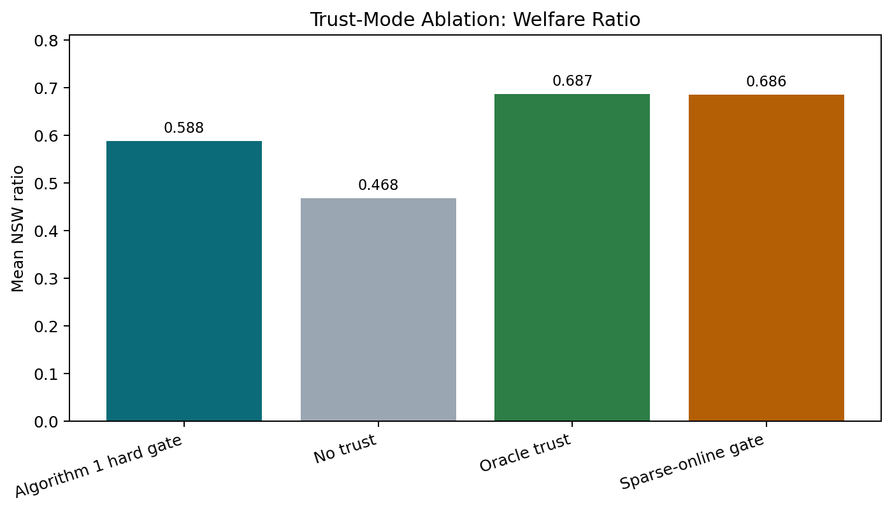
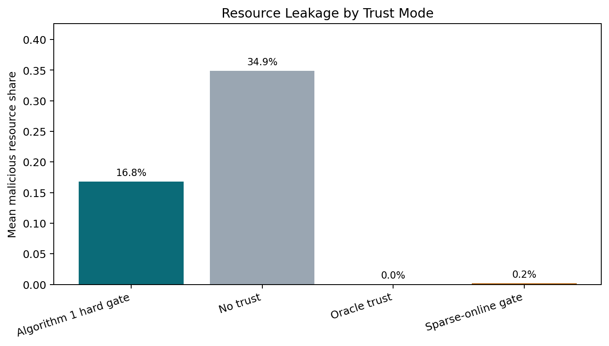
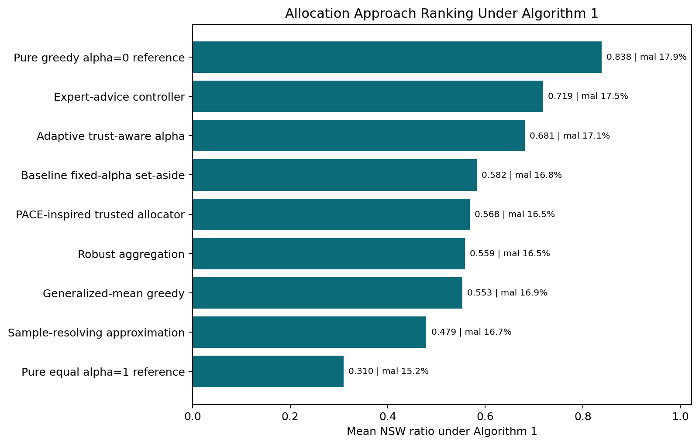
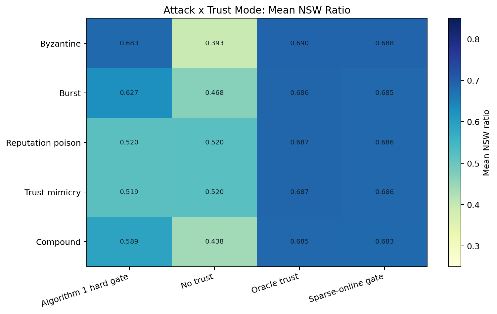
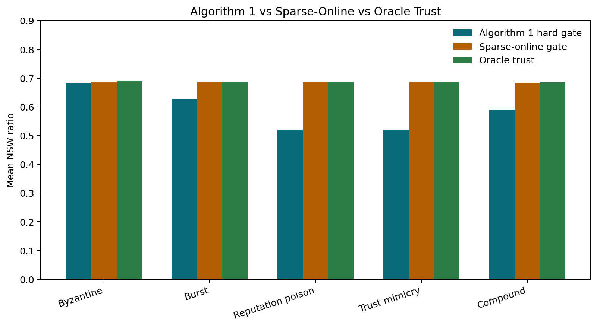

Abstract
This report studies how allocation rules from online welfare-maximization literature behave when they are placed behind an imperfect trust layer. The Moradi final simulator combines trust detection [R2] with a trust-filtered set-aside greedy allocator based on online Nash social welfare with predictions [R1]. The completed benchmark evaluates 9 simulator-level allocation variants, 5 attack types, and four trust modes: no trust, Algorithm 1, oracle trust, and sparse-online trust. The evaluated variants are not full reproductions of all original source-paper methods. The reported welfare ratio uses a Frank-Wolfe numerical approximation [R7] for the same concave NSW objective. This makes the denominator faster and more stable than relying on an SLSQP solve that may fall back to equal split, but it is still a numerical approximation rather than a formal certificate of optimality.
Overview
The simulator studies online divisible-good allocation when some agents strategically misreport their values. Each round has one unit of resource; the algorithm observes reported values, applies a trust gate, and allocates only through the information available at that time. Evaluation uses true values, so malicious reports can help attackers only if they survive the trust layer and influence allocation.
The main metric is Nash social welfare (NSW), the geometric mean of legitimate agents' cumulative utilities, following the online NSW-with-predictions setting of Banerjee et al. [R1]. The reported NSW ratio compares the online policy against a clairvoyant offline benchmark; higher ratios mean the online allocation is closer to the offline benchmark.
Project Vocabulary
| Term | Meaning |
|---|---|
| Agent | A participant who may receive part of the resource each round. |
| Legitimate agent | An honest agent. These are the agents whose welfare matters in the final NSW score. |
| Malicious agent | An attacker that may lie in reports and try to manipulate trust. |
| Report | The value announced to the allocator. It may be false for malicious agents. |
| True valuation | The value used to compute real utility after the allocation is made. |
| Trusted set | Agents currently allowed to receive resource from the allocator. |
| Detection rate | How often malicious agents are identified. |
| False positive rate | How often legitimate agents are incorrectly flagged. |
| Offline benchmark | A stronger comparison policy that sees the whole sequence before allocating. |
Problem Formulation
The simulator can be summarized as an online divisible-good allocation problem with strategic reports and trust filtering. The report uses this notation throughout.
| Object | Formula / definition |
|---|---|
| Resource arrival | At each round t = 1,...,T, one divisible resource with budget 1 arrives. |
| True value | Each agent i has true value v_{i,t} for the round-t resource. |
| Report observed by algorithm | The algorithm observes report r_{i,t}; for malicious agents this may differ from v_{i,t}. |
| Allocation decision | Choose x_{i,t} >= 0 with sum_i x_{i,t} = 1, usually after applying the trust filter. |
| Cumulative utility | U_{i,T} = sum_{t=1}^T v_{i,t} x_{i,t}. Evaluation uses true values, not reports. |
| Nash social welfare | NSW_T = (prod_{i in legitimate} U_{i,T})^{1/n_legit}; equivalently exp((1/n_legit) sum_i log U_{i,T}). |
| NSW ratio | Ratio = NSW_online / NSW_offline, where NSW_offline is the clairvoyant offline benchmark for the same valuation sequence. |
Round-by-Round Logic
Each simulation round follows the same basic pipeline. First, attackers decide whether to attack and create distorted reports. Second, the trust detector updates cumulative trust evidence and forms a trusted set. Third, the allocator divides the unit budget among trusted agents. Fourth, the simulator updates utilities using true valuations rather than reports. Finally, the code logs welfare, detection rate, false positives, minimum utility, fairness gap, malicious resource share, and other trust/allocation diagnostics. The older Moradi-focused runs also include detector F1-style summaries, while the combined 4,500-trial benchmark emphasizes detection rates and resource leakage.
This structure is important because a good detector can protect allocation, but only if the malicious agents are removed before allocation. Stealth attacks are dangerous because they can survive long enough to affect future allocation state.
Research Thesis
The main goal of this report is to study how different allocation variants behave under a shared trust-aware simulator. We use Algorithm 1 as the main trust setting, then include no-trust, oracle-trust, and sparse-online modes as ablations.
This means the report is not mainly trying to propose a new trust detector. The trust layer defines the experimental environment: sometimes the allocator receives clean input, and sometimes it receives contaminated input from trusted-but-malicious agents. The research question is which allocation rule is most robust under those conditions.
Why Compare These Variants Together?
These methods do not all solve the exact same theoretical problem in their original papers. We compare them because they can all be expressed as allocation rules or allocation controllers inside the same online trust-filtered simulator: each method receives the same reports, the same trusted set, and the same per-round budget, then outputs an allocation. This creates a fair empirical harness for studying how allocation behavior changes when the trust layer is imperfect.
Original Project Directions and Scope
The original project had three natural directions. This report focuses mainly on the third one: allocation alternatives under a shared trust-aware setting.
| Direction | Question | Role in this report |
|---|---|---|
| Alpha selection | Where should alpha come from, and how should the robustness-efficiency tradeoff be chosen? | Addressed through fixed-alpha baseline and the adaptive-alpha proposed method. |
| Trust mechanism | Can malicious agents be detected or scored more reliably? | Used mostly as a fixed experimental environment in this report; detector diagnostics explain input contamination. |
| Allocation alternatives | Under the same trust-aware setting, which allocation rules reduce welfare loss when attackers pass the filter? | Main focus of this report. |
Experimental Design
This compact design block is the main experiment in one place. It is the bridge between the paper ideas and the empirical benchmark.
| Item | Setting |
|---|---|
| Agents | 10 legitimate agents and 4 malicious agents |
| Rounds | 400 online allocation rounds per trial |
| Trials | 25 trials per cell |
| Allocation variants | 9 variants, including two alpha-reference endpoints |
| Attack types | 5 attack types |
| Trust modes | 4 trust modes: no trust, Algorithm 1, oracle trust, sparse-online |
| Total cells | 9 x 5 x 4 = 180 cells |
| Total trials | 180 x 25 = 4500 trials |
| Offline denominator | Frank-Wolfe numerical approximation to offline NSW |
| Main metrics | NSW ratio, malicious resource share, detection rate, minimum utility |
Trust Modes
The trust modes are not separate allocation algorithms. They define how much contamination reaches the allocator, which is why they are essential for interpreting allocation performance.
| Trust mode | Meaning | Purpose |
|---|---|---|
| No trust | Everyone remains eligible for allocation. | Lower-bound / no-defense condition: shows what happens when allocation receives contaminated input directly. |
| Algorithm 1 hard gate | The beta-gap trust detector decides which agents are excluded before allocation. | Main setting: evaluates allocation variants under the current trust mechanism. |
| Oracle trust | The simulator removes exactly the malicious agents before allocation. | Upper-bound trust-quality condition: separates allocation weakness from detector weakness. |
| Sparse-online gate | A graph-based Moradi-style sparse detector is used online as the trust gate. | Diagnostic trust extension: tests how allocation changes when trust quality improves, but it uses a strong malicious-count prior. |
Attack Types
| Attack | Plain-language explanation |
|---|---|
| Byzantine | A direct and noisy manipulation pattern. It is easy for the detector to catch. |
| Burst | An attacker behaves normally most of the time, then attacks in bursts. Detection eventually catches it, but recovery takes longer. |
| Reputation poison | An attacker behaves well early to build trust credit, then attacks later. This exploits cumulative trust inertia. |
| Trust mimicry | An attacker tries to stay close enough to normal behavior to avoid detection while still damaging welfare. |
| Compound | A coordinated attack type present in the code. It was not part of the 400-round approach benchmark, but it is included in the combined 4,500-trial benchmark. |
What Was Evaluated
The primary dataset is the combined full 4,500-trial summary: 9 allocation variants x 5 attacks x 4 trust modes x 25 trials. Each trial uses 400 rounds and logs welfare ratio, true legitimate NSW, minimum utility, fairness gap, detection rates, and malicious resource share, with valuation seeds held fixed across variants.
The 400-round all-approaches folder and Moradi focused output folder are treated as appendix context. They are useful for auditability and visual diagnostics, while the manuscript tables and claims below use the combined 4,500-trial benchmark as the primary evidence base.
Methods
The simulator allocates divisible budget each round under strategic reporting. For this report, the existing trust mechanism is used as the experimental environment. The allocation variants are evaluated after this trust filter, so detector results are included mainly to explain when the allocator receives clean input versus contaminated input. The new variant files share the same simulation step through TrustModeStepMixin, so attack timing, detection updates, metric logging, and offline comparison are held consistent across variants. The beta-gap trust detector is based on Akgun, Aydin, Gil, and Nedic [R2], while the Moradi graph diagnostics adapt trust-based sparsest-subgraph clustering [R3].
The evaluated variant set is fixed-alpha baseline, adaptive alpha, PACE-inspired trusted allocation, generalized-mean greedy, sample-resolving approximation, expert advice, robust aggregation, and two alpha-reference endpoints: pure greedy alpha=0 and pure equal alpha=1.
How To Read The Metrics
| Metric | How to interpret it |
|---|---|
| Average NSW | The achieved geometric-mean utility for legitimate agents. Higher is better. |
| NSW ratio | Achieved NSW divided by offline benchmark NSW. Higher is better; 1.0 would match the offline clairvoyant benchmark. |
| Minimum utility | The worst cumulative utility among legitimate agents. Higher means the most harmed honest agent is better protected. |
| Fairness gap | Spread between better-off and worse-off legitimate agents. Lower is usually more equal, but can also reflect everyone receiving less. |
| Detection rate | Fraction of malicious agents detected. Higher is better. |
| False positive rate | Fraction of legitimate agents wrongly detected. Lower is better. |
| Convergence round | Approximate round when detection stabilizes. Smaller is faster. |
| Alg1 / Spectral / Sparse F1 | Different detector-quality summaries. In this report, sparse F1 is diagnostic unless used online by the allocator. |
Important Clarification
From Source Papers to Simulator Variants
This is the literature-to-code translation layer. The source papers provide allocation ideas under their own assumptions; the simulator asks how those ideas behave after a trust gate, strategic reports, and shared NSW-ratio evaluation are imposed.
| Variant | Original paper idea | Original assumptions | Implemented here | Interpretation |
|---|---|---|---|---|
| Fixed-alpha set-aside | Reserve an equal set-aside share for fairness, then use greedy/water-filling behavior for efficiency. | Online divisible goods with prediction information, especially monopolist-utility style predictions. | Run the set-aside allocator only on the trusted set returned by the trust gate. | Tests whether the original robustness-efficiency structure remains stable when malicious agents may be admitted or excluded by trust. |
| Adaptive alpha | Use the alpha tradeoff in set-aside allocation as a controllable robustness level. | Not a source-paper theorem; it is a project-defined controller inspired by the set-aside baseline. | Replace fixed alpha with alpha_t computed from trust/report instability. | A direct allocation-side contribution: it modifies only the baseline alpha choice, not the whole allocator family. |
| PACE-inspired | Pace allocation using current estimated utility state rather than only immediate reports. | PACE-style guarantees depend on specific online fair-allocation assumptions. | Use a simplified trusted-set pacing score inside the same trust-filtered simulator. | Useful as a behavioral benchmark; weak performance is about this simplified implementation, not the original theorem. |
| Generalized-mean greedy | Optimize a broader family of welfare objectives beyond Nash social welfare. | The source setting studies generalized-mean welfare with sampling/regret structure. | Implement a lightweight generalized-mean marginal rule after trust filtering. | Tests whether broader welfare shaping helps when the evaluation metric is still NSW under contaminated reports. |
| Sample-resolving | Use samples or history to re-solve online allocation decisions more reliably. | Full sample-based methods assume richer sample/re-solving structure than this simulator uses. | Use rolling report medians as a cheap historical proxy before allocation. | Tests whether history stabilizes allocation; it can fail when stealth attackers poison the history. |
| Expert advice | Use multiplicative weights to combine experts according to realized performance. | Online learning over expert rewards/losses, not a direct NSW allocation algorithm by itself. | Treat allocator candidates as experts and update weights over defensive, aggressive, and generalized behaviors. | A meta-controller benchmark: strong empirical performance should not be read as an old theorem beating a newer allocator theorem. |
| Robust aggregation | Clip or downweight outlying inputs using robust-statistics ideas. | Robust statistics gives input-stabilization tools rather than a full online allocation rule. | Clip reports with median/MAD-style logic before passing them to the baseline allocator. | Useful for obvious outliers; less targeted to stealth attacks that look statistically normal. |
Allocation Variants
The explanations below slow down the comparison before the numerical tables. Each variant is described in terms of its intuition, how it is implemented in this simulator, and how its result should be interpreted. This matters because the rows are not all the same kind of object: some are allocators, some are controllers, some are approximations, and two are reference endpoints.
Baseline fixed-alpha set-aside
Clean baseline allocator. Original trust-filtered set-aside plus greedy water-filling with a fixed allocation_alpha. This is the control condition.
Intuition and implementation. This is the reference rule that the rest of the report modifies. After the trust gate decides which agents are currently trusted, the allocator splits the unit resource into two conceptual parts: a protective equal-share part and a greedy welfare-improving part. The fixed alpha parameter controls how much weight is put on the protective side. In the simulator, alpha is fixed for the entire run. The method therefore cannot react differently to a quiet period, an obvious attack, or a stealth attack that passes the detector. Its purpose is to provide a stable, directly interpretable baseline for the allocation-side comparisons.
Interpretation and caveat. If a new variant only slightly improves over this baseline, the improvement should be interpreted carefully. The fixed-alpha rule is simple, but it is also intentionally conservative and easy to audit.
Adaptive trust-aware alpha
Proposed direct extension. Keeps the original allocator but replaces fixed alpha with alpha_t, raising the defensive set-aside when trust or report instability rises.
Intuition and implementation. Adaptive alpha keeps the same set-aside structure but makes the defense level time-dependent. The core idea is that the allocator should not use the same risk posture when reports look stable as when trust evidence or reports become unstable. The simulator computes an alpha_t signal from trust/report instability. When instability rises, alpha_t moves toward a more defensive set-aside behavior; when the environment appears calmer, it can allow more welfare-seeking greedy allocation. This makes the method a controller plus allocator rather than a completely new allocation theory.
Interpretation and caveat. This is the main direct project contribution because it minimally changes the original baseline. It is not claimed to win every setting; its value is that it connects the trust layer to the allocation risk level in a transparent way. Unlike expert advice, adaptive alpha does not combine multiple allocators; it modifies only the alpha choice inside the original set-aside structure.
PACE-inspired trusted allocator
Paper-inspired allocator approximation. Uses a PACE-inspired allocation rule on the trusted set. It tests whether pacing-style state improves online welfare under the same trust filter.
Intuition and implementation. PACE-style allocation can be understood as trying to pace resources according to agents' accumulated utility state. Instead of only asking who has the largest immediate report, the method uses a state variable that reflects how allocation has accumulated over time. This report uses a trusted-set approximation of that idea: the rule is applied after the trust filter and is simplified to fit the same simulator interface as the other variants. It should not be read as a full reproduction of the source paper's model or guarantees.
Interpretation and caveat. The method is useful as a benchmark because it asks whether pacing-style state helps under strategic reports. A weak result here is evidence about this simplified implementation, not a rejection of the original PACE theory.
Generalized-mean greedy
Alternative welfare-shape allocator. Replaces the Nash-specific greedy marginal rule with a generalized-mean marginal rule, linking the simulator to generalized-welfare online allocation.
Intuition and implementation. Nash social welfare is one member of a broader family of welfare objectives. A generalized-mean rule changes the marginal priority assigned to agents, which can shift the allocation toward different fairness-efficiency tradeoffs. The simulator implements a greedy marginal rule inspired by generalized-mean welfare and applies it to the trusted set. The evaluation metric, however, remains Nash social welfare ratio. This means the method is being tested as an allocation variant inside the shared benchmark, not under every assumption of the source paper.
Interpretation and caveat. This variant is included to see whether changing the welfare shape helps when reports are attacked. If it does not beat fixed-alpha set-aside on NSW ratio, that may simply mean the altered objective is not aligned with this metric and trust environment.
Sample-resolving approximation
Historical-sample approximation. Stabilizes current reports with a rolling historical median and then uses a generalized-mean allocation step. It is an intentionally lightweight approximation of full sample-based re-solving.
Intuition and implementation. Sample-based re-solving methods use information from previous observations to make better online allocation decisions. The hope is that historical structure can stabilize decisions that would otherwise overreact to one round of noisy or adversarial reports. The implemented version is deliberately lightweight: it uses rolling report medians as a proxy for a richer sample-based re-solving algorithm, then feeds the stabilized signal into an allocation step. This keeps the runtime manageable and compatible with the existing simulator.
Interpretation and caveat. The main risk is that history itself can be poisoned. If stealth attackers survive the trust gate, their reports can enter the rolling history, so stabilization may preserve contamination rather than remove it.
Expert-advice controller
Meta-controller over allocator candidates. Runs defensive set-aside, aggressive set-aside, and generalized-mean candidates, then updates exponential weights from realized performance.
Intuition and implementation. Expert advice is not a standalone allocator. It is a portfolio method: run several candidate allocation behaviors, observe which ones perform better, and gradually put more weight on the stronger candidates. In this simulator, the experts are allocation candidates such as defensive set-aside, aggressive set-aside, and generalized-mean behavior. The controller updates exponential weights from realized performance and then combines the candidate decisions.
Interpretation and caveat. This explains why expert advice can rank highly: it is allowed to adapt among several behaviors while fixed-alpha set-aside commits to one behavior. The result should be reported as an empirical controller benchmark, not as a claim that the 1997 expert-advice theorem directly solves this allocation problem.
Robust aggregation
Preprocessing heuristic. Clips reports using median absolute deviation before passing them into the baseline allocation rule.
Intuition and implementation. Robust aggregation tries to clean the input before allocation. Rather than changing the allocator itself, it clips suspiciously extreme reports so that one very large or very small value has less influence. The implementation uses a median/MAD-style clipping rule and then passes the adjusted reports into the baseline allocation rule. It is therefore a preprocessing layer, not a new welfare optimizer.
Interpretation and caveat. This is naturally suited to obvious outliers such as Byzantine manipulation. It is less likely to solve stealth attacks where malicious reports are designed to look statistically ordinary.
Pure greedy alpha=0 reference
Efficiency reference endpoint. A reference extreme with no set-aside protection. It is not the proposed method; it shows the high-efficiency edge of the alpha tradeoff.
Intuition and implementation. Pure greedy removes the protective set-aside and gives the allocation rule maximum freedom to chase immediate welfare gains among the trusted agents. It corresponds to alpha=0 in the set-aside family. Under a good trust gate, this can produce a high NSW ratio because the allocator does not spend budget on equal-share protection.
Interpretation and caveat. It is not the proposed robust method. Its high ratio is informative, but it also leaks the most resource to malicious agents under Algorithm 1, showing that it relies heavily on trust quality.
Pure equal alpha=1 reference
Defensive reference endpoint. A reference extreme with all budget split equally across the trusted set. It is included to anchor the defensive end of the alpha tradeoff.
Intuition and implementation. Pure equal allocation is the opposite endpoint. It ignores reported value differences within the trusted set and divides the resource equally. It corresponds to alpha=1 in the set-aside family. This gives the largest protective floor but removes most of the welfare-seeking behavior.
Interpretation and caveat. The method is included as an anchor for the alpha tradeoff. It is useful for understanding the defensive boundary, but it is too inefficient to be the main recommendation.
Allocation Variant Taxonomy
This shorter taxonomy is separate from the citation map. It makes clear that the rows are not all the same theoretical object: some are allocators, some are controllers, one is a meta-controller, and one is a preprocessing heuristic.
| Approach | Type | Full paper reproduction? | Used as |
|---|---|---|---|
| Fixed-alpha set-aside | Allocator | Mostly direct adaptation | Clean baseline |
| Adaptive alpha | Controller plus allocator | Project-defined | Proposed method |
| PACE-inspired | Allocator approximation | Paper-inspired approximation | Baseline variant |
| Generalized-mean greedy | Allocator variant | Paper-inspired approximation | Baseline variant |
| Sample-resolving | Approximation | Paper-inspired approximation | Stress-test baseline |
| Expert advice | Meta-controller | Meta-controller | Empirical upper-style controller |
| Robust aggregation | Preprocessing heuristic | Heuristic | Robustness baseline |
| Pure greedy alpha=0 | Reference extreme | Reference endpoint | Efficiency-side alpha anchor |
| Pure equal alpha=1 | Reference extreme | Reference endpoint | Defense-side alpha anchor |
Main Contribution vs Baseline
The main project contribution is not that every new variant beats the literature baseline. The clean contribution is the adaptive-alpha controller: it keeps the set-aside allocator recognizable while using trust instability to control how defensive the allocation should be.
| Component | Existing baseline | Project contribution |
|---|---|---|
| Allocation rule | Fixed-alpha set-aside greedy. | Adaptive trust-aware alpha that changes the set-aside level over time. |
| Use of trust | Trust is mainly a hard gate: agents are included or excluded. | Trust instability also controls allocation risk through alpha_t. |
| Robustness level | One fixed defensive level for every attack regime. | Dynamic defense level that can become more conservative when reports or trust become unstable. |
| Evaluation focus | Standard attack comparisons around the fixed baseline. | Shared benchmark with stealth attacks and multiple implementation-level variants. |
Results
How to read the results. The results are organized in three steps. First, compare allocation variants under the Algorithm 1 hard trust gate. Second, remove the alpha endpoints to focus on non-extreme methods rather than pure efficiency or pure defense references. Third, use trust-mode ablations to separate allocator effects from trust-gate effects.
Efficiency references versus robustness contributions. Pure greedy is included to show the high-efficiency endpoint of the alpha tradeoff, but because it has no set-aside protection, it is not treated as the proposed robust method.
Ranking Under Algorithm 1 Hard Trust Gate
| Rank | Approach | Mean ratio | Mean NSW | Mean min utility | Mean fairness gap | Mean malicious share |
|---|---|---|---|---|---|---|
| 1 | Pure greedy alpha=0 reference | 0.838 | 6.564 | 5.724 | 1.733 | 17.9% |
| 2 | Expert-advice controller | 0.719 | 5.626 | 4.933 | 1.428 | 17.5% |
| 3 | Adaptive trust-aware alpha | 0.681 | 5.331 | 4.683 | 1.346 | 17.1% |
| 4 | Baseline fixed-alpha set-aside | 0.582 | 4.559 | 3.991 | 1.191 | 16.8% |
| 5 | PACE-inspired trusted allocator | 0.568 | 4.447 | 3.699 | 1.660 | 16.5% |
| 6 | Robust aggregation | 0.559 | 4.374 | 3.978 | 0.851 | 16.5% |
| 7 | Generalized-mean greedy | 0.553 | 4.330 | 3.985 | 0.759 | 16.9% |
| 8 | Sample-resolving approximation | 0.479 | 3.751 | 3.482 | 0.592 | 16.7% |
| 9 | Pure equal alpha=1 reference | 0.310 | 2.424 | 2.274 | 0.323 | 15.2% |
Ranking caveat. This ranking is empirical and implementation-specific. The alpha=0 pure greedy row is a reference endpoint, not the proposed robust method. It achieves high NSW by emphasizing immediate efficiency, but it also has the largest mean malicious resource share in the Algorithm 1 ranking. That makes it an upper-efficiency anchor, not the final recommendation.
Algorithm 1 Ranking, Non-Extreme Methods Only
This table removes the alpha=0 and alpha=1 reference endpoints so the main allocation-method comparison is not visually dominated by pure greedy.
| Rank | Approach | Mean ratio | Mean min utility | Mean malicious share |
|---|---|---|---|---|
| 1 | Expert-advice controller | 0.719 | 4.933 | 17.5% |
| 2 | Adaptive trust-aware alpha | 0.681 | 4.683 | 17.1% |
| 3 | Baseline fixed-alpha set-aside | 0.582 | 3.991 | 16.8% |
| 4 | PACE-inspired trusted allocator | 0.568 | 3.699 | 16.5% |
| 5 | Robust aggregation | 0.559 | 3.978 | 16.5% |
| 6 | Generalized-mean greedy | 0.553 | 3.985 | 16.9% |
| 7 | Sample-resolving approximation | 0.479 | 3.482 | 16.7% |
Ratio by Attack Under Algorithm 1
| Attack | Baseline fixed-alpha set-aside | Adaptive trust-aware alpha | PACE-inspired trusted allocator | Generalized-mean greedy | Sample-resolving approximation | Expert-advice controller | Robust aggregation | Pure greedy alpha=0 reference | Pure equal alpha=1 reference |
|---|---|---|---|---|---|---|---|---|---|
| Byzantine | 0.672 | 0.805 | 0.659 | 0.647 | 0.562 | 0.827 | 0.648 | 0.965 | 0.364 |
| Burst | 0.619 | 0.712 | 0.614 | 0.597 | 0.519 | 0.759 | 0.599 | 0.882 | 0.341 |
| Reputation poison | 0.520 | 0.608 | 0.494 | 0.480 | 0.413 | 0.648 | 0.491 | 0.759 | 0.261 |
| Trust mimicry | 0.521 | 0.607 | 0.494 | 0.480 | 0.413 | 0.648 | 0.491 | 0.759 | 0.261 |
| Compound | 0.580 | 0.672 | 0.578 | 0.560 | 0.488 | 0.712 | 0.564 | 0.827 | 0.321 |
Lift Over Fixed-Alpha Baseline Under Algorithm 1
This lift is computed only within the Algorithm 1 hard-gate condition, using the fixed-alpha set-aside row for the same attack as the denominator. It is not averaged across no-trust, oracle, or sparse-online trust modes.
| Approach | Mean absolute ratio lift | Mean relative lift |
|---|---|---|
| Pure greedy alpha=0 reference | 0.256 | 44.1% |
| Expert-advice controller | 0.136 | 23.5% |
| Adaptive trust-aware alpha | 0.099 | 16.9% |
| PACE-inspired trusted allocator | -0.014 | -2.6% |
| Robust aggregation | -0.024 | -4.1% |
| Generalized-mean greedy | -0.029 | -5.2% |
| Sample-resolving approximation | -0.103 | -17.9% |
| Pure equal alpha=1 reference | -0.273 | -47.0% |
Trust-Mode Ablation
| Trust mode | Mean ratio | Mean malicious share | Detection rate | Mean min utility |
|---|---|---|---|---|
| Algorithm 1 hard gate | 0.588 | 16.8% | 54.4% | 4.083 |
| No trust | 0.468 | 34.9% | 0.0% | 3.210 |
| Oracle trust | 0.687 | 0.0% | 100.0% | 4.814 |
| Sparse-online gate | 0.686 | 0.2% | 100.0% | 4.801 |
Attack by Trust Mode
| Attack | Trust mode | Mean ratio | Mean malicious share | Detection rate |
|---|---|---|---|---|
| Byzantine | Algorithm 1 hard gate | 0.683 | 0.9% | 100.0% |
| Byzantine | No trust | 0.393 | 43.8% | 0.0% |
| Byzantine | Oracle trust | 0.690 | 0.0% | 100.0% |
| Byzantine | Sparse-online gate | 0.688 | 0.2% | 100.0% |
| Burst | Algorithm 1 hard gate | 0.627 | 9.0% | 100.0% |
| Burst | No trust | 0.468 | 34.2% | 0.0% |
| Burst | Oracle trust | 0.686 | 0.0% | 100.0% |
| Burst | Sparse-online gate | 0.685 | 0.1% | 100.0% |
| Reputation poison | Algorithm 1 hard gate | 0.520 | 29.3% | 0.0% |
| Reputation poison | No trust | 0.520 | 29.3% | 0.0% |
| Reputation poison | Oracle trust | 0.687 | 0.0% | 100.0% |
| Reputation poison | Sparse-online gate | 0.686 | 0.2% | 100.0% |
| Trust mimicry | Algorithm 1 hard gate | 0.519 | 29.2% | 0.0% |
| Trust mimicry | No trust | 0.520 | 29.2% | 0.0% |
| Trust mimicry | Oracle trust | 0.687 | 0.0% | 100.0% |
| Trust mimicry | Sparse-online gate | 0.686 | 0.2% | 100.0% |
| Compound | Algorithm 1 hard gate | 0.589 | 15.5% | 72.0% |
| Compound | No trust | 0.438 | 37.9% | 0.0% |
| Compound | Oracle trust | 0.685 | 0.0% | 100.0% |
| Compound | Sparse-online gate | 0.683 | 0.2% | 100.0% |
Stealth-Attack Resource Leakage
| Attack | Trust mode | Mean ratio | Mean malicious share | Detection rate |
|---|---|---|---|---|
| Reputation poison | Algorithm 1 hard gate | 0.520 | 29.3% | 0.0% |
| Reputation poison | No trust | 0.520 | 29.3% | 0.0% |
| Reputation poison | Oracle trust | 0.687 | 0.0% | 100.0% |
| Reputation poison | Sparse-online gate | 0.686 | 0.2% | 100.0% |
| Trust mimicry | Algorithm 1 hard gate | 0.519 | 29.2% | 0.0% |
| Trust mimicry | No trust | 0.520 | 29.2% | 0.0% |
| Trust mimicry | Oracle trust | 0.687 | 0.0% | 100.0% |
| Trust mimicry | Sparse-online gate | 0.686 | 0.2% | 100.0% |
Paired 95% Confidence Intervals
These intervals use the per-trial CSV, pairing runs by attack and trial id; the sparse-online comparison is also paired by approach. They are descriptive uncertainty intervals for this simulator, not formal theorem-level guarantees.
| Comparison | Mean ratio difference | 95% CI half-width | Paired observations |
|---|---|---|---|
| Expert advice vs fixed-alpha under Algorithm 1 | 0.136 | +/- 0.002 | 125 |
| Adaptive alpha vs fixed-alpha under Algorithm 1 | 0.099 | +/- 0.003 | 125 |
| Sparse-online trust vs Algorithm 1 hard gate | 0.098 | +/- 0.004 | 1125 |
Key Findings
| Finding | Meaning |
|---|---|
| Allocation-side adaptation helps. | Under Algorithm 1, expert advice and adaptive alpha improve over fixed-alpha set-aside among the main non-extreme variants. |
| Trust quality dominates under stealth attacks. | Algorithm 1 fails on Reputation Poison and Trust Mimicry, so the allocator often receives contaminated trusted input. |
| Sparse-online is promising but not final. | It nearly matches oracle trust in this simulator, but it uses a strong malicious-count prior and needs sensitivity testing. |
| Pure greedy is not the final answer. | It achieves the highest NSW ratio under Algorithm 1, but it leaks the most resource to malicious agents and relies heavily on trust quality. |
| The next direction is allocation-trust co-design. | The evidence points toward soft trust weighting, better allocation risk signals, and robustness tests for sparse-online trust. |
Why Expert Advice Is the Strongest Non-Extreme Controller
Expert advice is the strongest non-extreme controller here because it is not a standalone allocation rule; it is a controller that selects among allocation behaviors implemented in this simulator. It uses several candidate allocators and shifts weight toward the candidate that performs better under the current attack pattern. In this implementation, those candidates include defensive set-aside, aggressive set-aside, and generalized-mean behavior.
Fixed-alpha set-aside commits to one alpha value for the entire run. That makes it clean and interpretable, but it cannot automatically become more aggressive during easier periods or more defensive when the attack pattern changes. The expert-advice controller can adapt across those behaviors, which explains why it can outperform the single fixed-alpha rule in this mixed-attack simulator without implying that the expert-advice paper itself solves the original online NSW allocation problem.
Why Adaptive Alpha Is The Main Contribution
Expert advice is strongest empirically, but it is harder to claim as a clean direct contribution because it is a meta-controller over several candidate allocators. Adaptive alpha is more defensible as the main proposed method because it minimally extends the original set-aside allocator and uses the trust layer to control robustness. Its empirical advantage should be read as trust-mode dependent rather than universal.
This distinction also makes the paper narrative cleaner: fixed-alpha set-aside is the directly sourced baseline, adaptive alpha is the proposed trust-aware extension, and expert advice is an empirical controller benchmark showing how much can be gained by adaptively combining several behaviors.
Mechanism Evidence
The trust-ablation results directly separate detector effects from allocator effects. No-trust has mean ratio 0.468 and malicious resource share 34.9%. Algorithm 1 improves the mean ratio to 0.588, but still leaks 16.8% of allocation to malicious agents on average. Oracle trust reaches 0.687; sparse-online trust nearly matches it at 0.686. This is a trust-gate finding, not the main allocation contribution.
The sparse-online result is promising, but it may benefit from simulator structure. In this implementation, the sparsest-subgraph detector is given cfg.n_malicious and trims the detected set to that known malicious count, which is a strong cardinality prior. Therefore, sparse-online should be interpreted as a diagnostic trust-gate upper-ablation between Algorithm 1 and oracle trust, not as a deployment-ready detector. It should not be claimed as theoretically guaranteed, and it needs sensitivity tests under noisier trust observations, different malicious-agent counts, and less separable attack behavior before being presented as a final trust mechanism.
The mechanism is clearest on Reputation Poison and Trust Mimicry: Algorithm 1 has zero final detection rate on both stealth attacks, and its welfare is essentially the same as no trust. Sparse-online and oracle trust remove nearly all malicious resource share and restore ratios near the oracle benchmark. This means the allocator comparison and the trust mechanism must be interpreted together.
Detector Behavior
Algorithm 1 from the trustworthy-consensus line [R2] catches obvious Byzantine and Burst behavior under the hard trust gate, partially catches Compound, and misses the two stealth attacks. The sparse-online gate adapts the Moradi trust-graph/sparsest-subgraph idea [R3] as an online allocation gate; in this experiment it behaves almost like oracle trust, but it should still be described as an empirical simulator result rather than a deployment-ready theorem.
Allocation consequence: when Algorithm 1 fails on stealth attacks, hard-gate trust stops helping. Welfare then depends on whether the allocator can limit damage from agents that are still labeled trusted.
| Attack | Algorithm 1 detection rate | False positive rate | Mean malicious share |
|---|---|---|---|
| Byzantine | 100.0% | 0.0% | 0.9% |
| Burst | 100.0% | 0.0% | 9.0% |
| Reputation poison | 0.0% | 0.0% | 29.3% |
| Trust mimicry | 0.0% | 0.0% | 29.2% |
| Compound | 72.0% | 0.0% | 15.5% |
Horizon Effects
This horizon-effect table comes from the earlier 200-vs-400 comparison output, not from the combined 4,500-trial grid, which uses 400 rounds throughout.
Moving from 200 to 400 rounds helps Burst most because delayed detection and recovery have more time to amortize. Stealth attacks barely improve for static or sample-heavy variants, showing that longer horizons alone do not solve reputation poisoning.
| Approach | Mean delta | Burst delta | Stealth delta |
|---|---|---|---|
| Adaptive trust-aware alpha | 0.036 | 0.094 | 0.015 |
| Expert-advice controller | 0.033 | 0.084 | 0.016 |
| Baseline fixed-alpha set-aside | 0.019 | 0.057 | 0.006 |
| Robust aggregation | 0.017 | 0.054 | 0.004 |
| Generalized-mean greedy | 0.016 | 0.056 | 0.001 |
| Sample-resolving approximation | 0.013 | 0.048 | -0.000 |
| PACE-inspired trusted allocator | 0.008 | 0.051 | -0.012 |
Interpretation
The benchmark supports two conclusions. First, a stronger offline benchmark lowers ratios relative to an equal-split fallback, but it is the right comparison because it makes the denominator a real offline optimum approximation rather than an accidental weak baseline. Second, robustness should be added at the controller level before claiming that a full allocator replacement is superior. Expert advice performs well because it is a meta-controller: it adaptively combines several allocator candidates rather than committing to one fixed allocation rule. In this implementation, those candidates include set-aside-style experts and generalized-mean behavior, and the weights are updated using the exponential-weights idea [R6].
PACE-inspired [R4], generalized-mean [R5], robust-aggregation [R9], and sample-resolving [R5] variants should be treated as implementation-level baselines or approximations, not full reproductions of the corresponding theoretical methods. Under Algorithm 1, none of them beat the fixed-alpha baseline on mean ratio in this run. The negative results for PACE-inspired, generalized-mean, and sample-resolving variants should be read as results for these simplified implementations, not as failures of the original papers.
Conclusion
Under Algorithm 1, pure greedy is the highest-efficiency endpoint but not the safest robustness contribution because it relies heavily on the trust gate and leaks the most resource to malicious agents. If the trust gate is wrong, pure greedy has no set-aside cushion, so the same aggressiveness that raises NSW can also route resource to attackers. Expert advice is the strongest practical controller because it can mix allocator behaviors. The direct alpha modification remains useful because it changes the fixed-alpha set-aside baseline itself, although its advantage depends on trust quality. PACE-inspired, generalized-mean, sample-resolving, and robust-aggregation variants do not improve over fixed-alpha in this simulator. When trust improves to sparse-online or oracle trust, most allocation methods improve, showing that trust quality and allocation rule interact strongly.
These findings should be interpreted as evidence about the implemented simulator variants, not as a theoretical ranking of the original source papers.
Final Recommendation
| Role | Choice | Reason |
|---|---|---|
| Use as baseline | Fixed-alpha set-aside | Cleanest directly sourced allocation baseline. |
| Use as proposed method | Adaptive alpha | Cleanest allocation-side extension; its advantage depends on trust quality. |
| Use as empirical controller | Expert advice | Strongest practical controller among non-extreme variants. |
| Use as efficiency reference | Pure greedy alpha=0 | Highest Algorithm 1 ratio, but high malicious resource share makes it a reference endpoint. |
| Use as defensive reference | Pure equal alpha=1 | Defense-side alpha endpoint; useful anchor but low NSW efficiency. |
| Use as trust upper bound | Oracle trust | Shows allocation performance when malicious identities are known. |
| Use as promising trust extension | Sparse-online gate | Strong trust-gate ablation result, not the main allocation contribution. |
Primary 4,500-Trial Visualizations
The five figures below are created directly from full_4500_cell_summary.csv and embedded in the main report body so that the visual evidence matches the primary benchmark.





Reproducibility Files
The full legacy graph folders are kept as reproducibility artifacts rather than embedded into the main report. This compact table lists the files needed to reproduce the main tables, figures, and appendix context.
| File | Type |
|---|---|
| combined_full_4500_summary/full_4500_cell_summary.csv | csv |
| combined_full_4500_summary/full_4500_trial_summary.csv | csv |
| combined_full_4500_summary/figures/fig1_trust_mode_ratio.png | png |
| combined_full_4500_summary/figures/fig2_malicious_share_by_trust_mode.png | png |
| combined_full_4500_summary/figures/fig3_algorithm1_approach_ranking.png | png |
| combined_full_4500_summary/figures/fig4_attack_trust_heatmap.png | png |
| combined_full_4500_summary/figures/fig5_trust_gate_comparison_by_attack.png | png |
| output_400_rounds/all_approaches_400rounds_summary.csv | csv |
| output_400_rounds/all_approaches_200_vs_400_ratio_comparison.csv | csv |
| output_400_rounds/NSW_ALL_APPROACHES_400_RUN_NOTES.txt | txt |
| outputs/Output_Moradi/NSW_RUN_SUMMARY.txt | txt |
Appendix: Allocation Variant Comparison
This reference table is kept outside the main narrative because it overlaps with the variant explanations and taxonomy. It is useful for auditability: it states what each variant changes relative to the fixed-alpha set-aside baseline and why it might succeed or fail after the trust filter.
| Approach | Is it a true allocator? | How it uses trust | What changes from baseline | Expected strength | Expected weakness |
|---|---|---|---|---|---|
| Fixed-alpha set-aside | Yes, baseline allocator | Hard gate: only trusted agents receive allocation. | Keeps alpha fixed. | Simple, interpretable, directly sourced baseline. | Cannot adapt when trust becomes uncertain or stealth attackers pass the gate. |
| Adaptive alpha | Controller plus allocator | Trust/report instability controls alpha_t. | Makes defensive set-aside dynamic. | Cleanest project contribution; minimal extension of baseline. | Mechanism depends on the calibration of the instability signal. |
| PACE-inspired | Allocator approximation | Runs on the trusted set. | Tests pacing-style allocation under trust filtering. | Useful comparator for online fair allocation behavior. | Not a full reproduction of the PACE theorem setting. |
| Generalized-mean greedy | Allocator variant | Runs on the trusted set. | Changes the welfare/marginal-priority shape. | Can explore broader fairness objectives. | May not improve NSW when NSW remains the evaluation metric. |
| Sample-resolving | Historical-sample approximation | Uses report history after trust filtering. | Stabilizes current reports with historical samples. | Useful negative-result stress baseline. | History can be poisoned when stealth attackers survive trust filtering. |
| Expert advice | Meta-controller | Combines allocator candidates under the same trust environment. | Shifts weights among defensive/aggressive/generalized behaviors. | Strongest empirical controller benchmark. | Mechanism attribution is less direct because it mixes candidate allocators. |
| Robust aggregation | Preprocessing heuristic | Clips reports before allocation. | Reduces extreme reported values. | Useful for extreme Byzantine-style manipulation. | Less naturally targeted to stealth mimicry or reputation poisoning. |
| Pure greedy alpha=0 | Reference allocator extreme | Runs on the selected trust set. | Removes the set-aside floor entirely. | Shows the high-efficiency edge of the alpha tradeoff. | Sends more resource to malicious agents when trust fails; not a clean robustness contribution. |
| Pure equal alpha=1 | Reference allocator extreme | Runs on the selected trust set. | Uses only equal split within the trusted set. | Shows the most defensive alpha endpoint. | Sacrifices NSW efficiency and is not competitive as the main method. |
Appendix: Citation Map
This attribution table lists the paper sources and project-defined components. It is kept in the appendix because the main body now explains the paper-to-simulator translation directly.
| Approach / component | Paper origin | Citation | Correct interpretation |
|---|---|---|---|
| Baseline fixed-alpha set-aside allocator | Banerjee-style online NSW with predictions: set-aside plus greedy/water-filling over predicted monopolist utilities. | [R1] | Direct baseline adaptation. The project restricts the allocator to the current trusted set; that trust gate is our simulator adaptation. |
| Prediction stress tests and V_tilde idea | Prediction-based online NSW framework where predictions are monopolist-utility estimates. | [R1] | The named prediction scenarios are simulator stress tests, not separate source-paper methods. |
| Cumulative beta trust detector and xi_t threshold | Trust-observation detector for trustworthy consensus under random dynamic attacks. | [R2] | The simulator uses the detector as a pre-allocation trust filter rather than as a consensus-only mechanism. |
| Moradi blended trust graph and sparsest-subgraph diagnostic | Trust-aware recommender graph clustering with sparsest-subgraph initialization. | [R3] | The code adapts the trust graph idea for malicious-agent diagnostics in this allocation simulator. |
| Spectral detector comparison | Standard spectral clustering baseline. | [R8] | Used only as a comparison detector, not as the main trust rule. |
| PACE-inspired trusted allocator | PACE, Pacing According to Current Estimated utility, and its relation to greedy allocation under adversarial input. | [R4] | The implementation is a trusted-set approximation, not a full reproduction of all assumptions and guarantees. |
| Generalized-mean greedy | Online generalized-mean welfare maximization with greedy rules. | [R5] | The project implements a lightweight greedy variant inside the same trust/attack simulator. |
| Sample-resolving approximation | Re-solving paradigm using historical samples for generalized-mean welfare. | [R5] | The code uses rolling report medians as a cheap proxy, so this is only an approximation of the paper's re-solving methods. |
| Expert-advice controller | Exponential weights / multiplicative-weights online learning. | [R6] | The experts are allocator candidates designed for this project: defensive set-aside, aggressive set-aside, and generalized-mean greedy. |
| Robust aggregation | Robust-statistics idea behind median/MAD clipping. | [R9] | This is a project heuristic for clipping reports before the baseline allocator. |
| Frank-Wolfe offline benchmark | Conditional-gradient / Frank-Wolfe optimization. | [R7] | Used to approximate the offline NSW denominator faster and more reliably than an SLSQP solve with equal-split fallback. |
| Byzantine, Burst, Reputation Poison, Trust Mimicry, Compound attacks | Simulation attack scenarios. | Project-defined | These are not direct methods from the cited allocation papers; they are adversarial scenarios used to stress the trust-aware allocator. |
| Adaptive trust-aware alpha | Project contribution inspired by the robustness-versus-efficiency role of alpha in the set-aside allocator. | [R1] plus project-defined controller | Proposed controller. The dynamic alpha_t controller is ours; it is not claimed as a theorem from Banerjee et al. |
Limitations and Threats to Validity
- The report summarizes completed CSV outputs; it is not a formal proof of correctness.
- The Frank-Wolfe offline benchmark is faster and more stable than relying on an SLSQP equal-split fallback, but it is still a numerical approximation rather than a formal optimality certificate.
- The trust observation process uses simulator-side status and attack information, so detector performance should not be presented as deployment-ready evidence.
- The sparse-online trust result is strong in this simulator, but it should be treated as an empirical gate comparison rather than a theoretical guarantee.
- GPU acceleration is not expected to materially help this code, because the workload is Python, NumPy, SciPy, and plotting/document generation CPU work rather than tensor computation.
References
- [R1] Banerjee et al. 2022. Siddhartha Banerjee, Vasilis Gkatzelis, Artur Gorokh, and Billy Jin. Online Nash Social Welfare Maximization with Predictions. SODA 2022, pages 1-19. DOI: 10.1137/1.9781611977073.1; arXiv:2008.03564. https://doi.org/10.1137/1.9781611977073.1
- [R2] Akgun et al. 2025. Orhan Eren Akgun, Sarper Aydin, Stephanie Gil, and Angelia Nedic. Multi-Agent Trustworthy Consensus under Random Dynamic Attacks. arXiv:2504.07189, 2025. https://arxiv.org/abs/2504.07189
- [R3] Moradi et al. 2015. Parham Moradi, Sajad Ahmadian, and Fardin Akhlaghian. An effective trust-based recommendation method using a novel graph clustering algorithm. Physica A 436:462-481, 2015. DOI: 10.1016/j.physa.2015.05.008. https://doi.org/10.1016/j.physa.2015.05.008
- [R4] Yang, Liao, and Kroer 2024. Zongjun Yang, Luofeng Liao, and Christian Kroer. Greedy-Based Online Fair Allocation with Adversarial Input: Enabling Best-of-Many-Worlds Guarantees. AAAI 2024; arXiv:2308.09277. https://arxiv.org/abs/2308.09277
- [R5] Yang, Kumar, and Kroer 2026. Zongjun Yang, Rachitesh Kumar, and Christian Kroer. Online Generalized-mean Welfare Maximization: Achieving Near-Optimal Regret from Samples. arXiv:2602.10469, 2026. https://arxiv.org/abs/2602.10469
- [R6] Freund and Schapire 1997. Yoav Freund and Robert E. Schapire. A Decision-Theoretic Generalization of On-Line Learning and an Application to Boosting. Journal of Computer and System Sciences 55(1):119-139, 1997. DOI: 10.1006/jcss.1997.1504. https://doi.org/10.1006/jcss.1997.1504
- [R7] Frank and Wolfe 1956. Marguerite Frank and Philip Wolfe. An algorithm for quadratic programming. Naval Research Logistics Quarterly 3(1-2):95-110, 1956. DOI: 10.1002/nav.3800030109. https://doi.org/10.1002/nav.3800030109
- [R8] von Luxburg 2007. Ulrike von Luxburg. A tutorial on spectral clustering. Statistics and Computing 17:395-416, 2007. DOI: 10.1007/s11222-007-9033-z. https://doi.org/10.1007/s11222-007-9033-z
- [R9] Huber and Ronchetti 2009. Peter J. Huber and Elvezio M. Ronchetti. Robust Statistics, 2nd edition. Wiley, 2009. Used as background for median/MAD-style robust clipping. https://doi.org/10.1002/9780470434697
Appendix: Output Files Used
Final interpretation: fixed-alpha set-aside greedy is the cleanest directly sourced theoretical baseline; adaptive alpha is the cleanest direct allocation-side extension; expert advice is the strongest empirical controller; and pure greedy alpha=0 should be treated as an efficiency reference rather than the proposed robust method.
combined_full_4500_summary/full_4500_cell_summary.csvcombined_full_4500_summary/full_4500_trial_summary.csvoutput_400_rounds/all_approaches_400rounds_summary.csvoutput_400_rounds/all_approaches_200_vs_400_ratio_comparison.csvoutput_400_rounds/NSW_ALL_APPROACHES_400_RUN_NOTES.txtoutputs/Output_Moradi/NSW_RUN_SUMMARY.txt